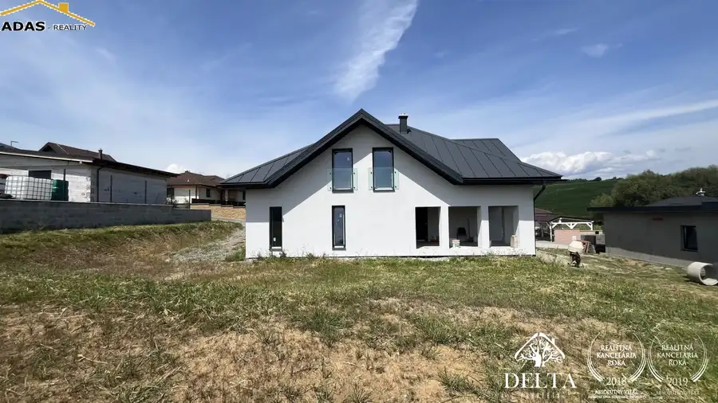
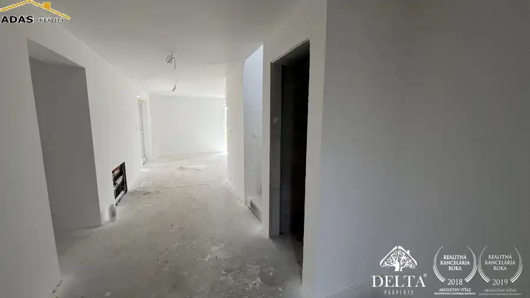
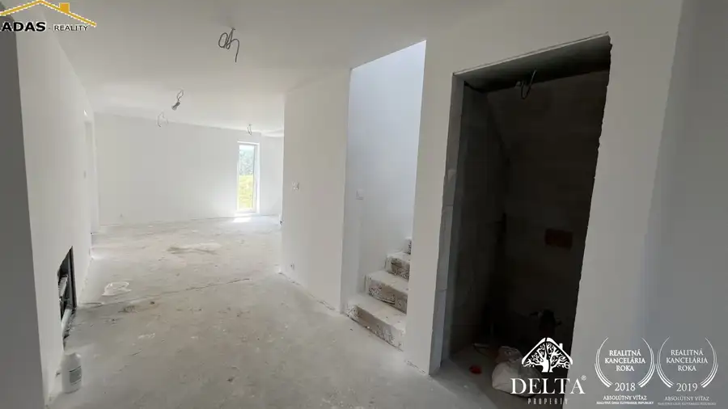
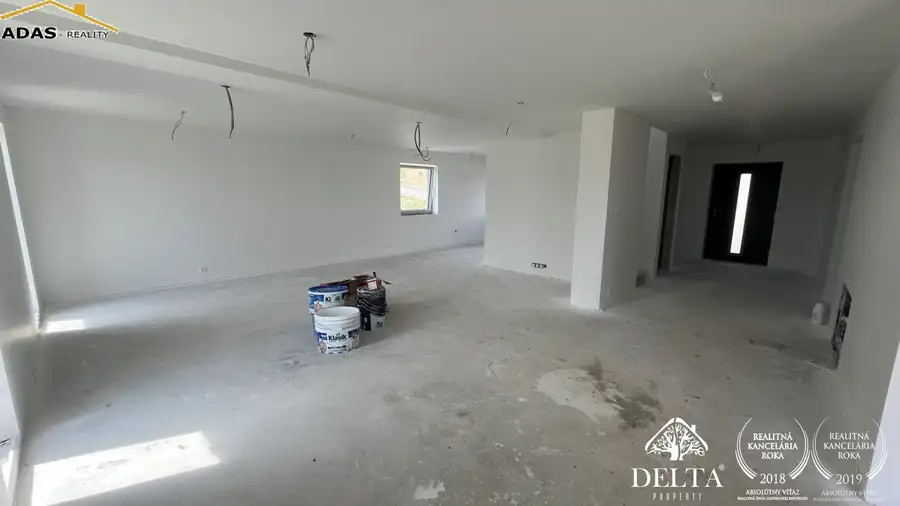
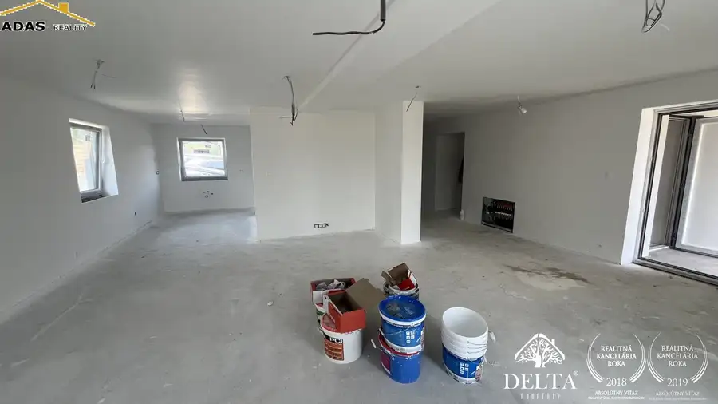
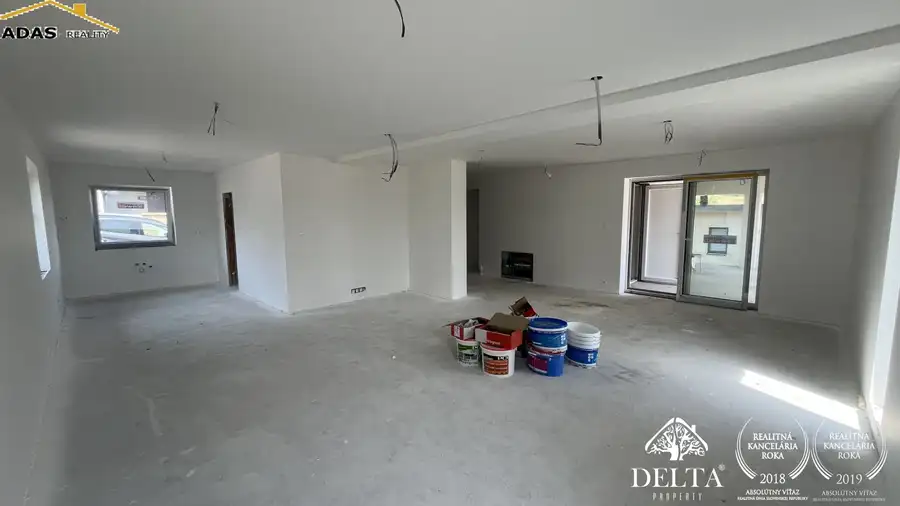
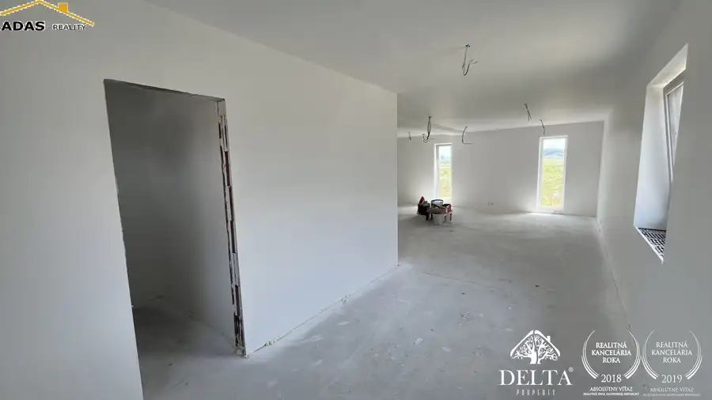

Ponúkame na predaj novostavbu rodinného dom ktorý sa nachádza v obci Župčany, vzdialenej, len 8km od Prešova
Župčany








- Plocha200 m²
- StavNovostavba
- VlastníctvoOsobné
O nehnuteľnosti
Predaj: Novostavba 5-izbového rodinného domu – Župčany (8 km od Prešova)Ponúkame na predaj priestranný, dvojpodlažný rodinný dom v štádiu holodom, situovaný v tichej slepej ulici na slnečnom pozemku. Ideálna voľba pre rodinu hľadajúcu pokojné bývanie s výbornou dostupnosťou do mesta.Základné parametre:•Lokalita: Župčany (len 8 km od Prešova, rýchle napojenie na diaľnicu)•Pozemok: 700 m² (slnečný, rovinatý)•Zastavaná plocha: 130 m²•Úžitková plocha: 200 m²•Stav: Holodom (práve prebehla kolaudácia)•Cena: 260 000 € ________________________________________Dispozícia domu:•1. nadzemné podlažie: Vstupná chodba, samostatné WC, kúpeľňa s WC, spálňa, technická miestnosť a priestranná obývacia izba prepojená s kuchyňou a výstupom na terasu.•2. nadzemné podlažie: Chodba, kúpeľňa s WC a 3 veľké, nepriechodné izby.Technické vybavenie a materiály:•Konštrukcia: Ytong + zateplenie.•Strecha: Plechová krytina.•Okná: Kvalitné plastové okná.•Kúrenie: Prvé podlažie – elektrické podlahové kúrenie; druhé podlažie – radiátory.•Interiér: Sadrokartóny, hygienická biela maľba, betónové potery.•Príprava: Príprava na krb a tuhé palivo.•Inžinierske siete: Dom je napojený na vlastnú čističku odpadových vôd (ČOV). Plyn sa na pozemku nenachádza.________________________________________Výhody ponuky:•Súkromie: Dom sa nachádza v slepej ulici, čo zaručuje minimálny pohyb áut a bezpečné prostredie pre deti.•Exteriér: Pozemok o výmere 570 m² (voľná časť) poskytuje dostatok priestoru pre výstavbu garáže, altánku či prístrešku pre autá.•Občianska vybavenosť: V obci Župčany sa nachádza škola, škôlka, obchod aj pizzeria.•Dostupnosť: Rýchly prístup do Prešova a na diaľničný obchvat.________________________________________V prípade záujmu o obhliadku alebo bližšie informácie ma neváhajte kontaktovať:Kontakt: Andrea Šubová 0917 757 338 andrea.subova@adas.sk
Parametre
- Doprava
- MHD
- Druh
- Rodinný dom
- Druh domu
- Klasický dom
- Dátum zverejnenia
- 09. 08. 2024
- Energetická náročnosť
- Energeticky úsporný
- Energetický certifikát budovy
- V príprave
- Plocha pozemku
- 700 m²
- Podpivničenie
- Nedostupné
- Počet izieb / miestností
- 5
- Počet kúpeľní
- 2
- Počet nadzemných podlaží
- 2
- Prístupová komunikácia
- Asfaltová
- Rok kolaudácie
- 2026
- Rok výstavby
- 2024
- Stav nehnuteľnosti
- Novostavba
- Terén pozemku
- Rovinatý
- Typ
- Predaj
- Typ konštrukcie
- Bloková konštrukcia
- Vlastníctvo
- Osobné
- Vybavenie
- Predzáhradka, Terasa, Vonkajšie parkovacie miesto
- Vykurovanie
- Podlahové, Iné
- Zastavaná plocha
- 130 m²
- Úžitková plocha
- 200 m²
Kde to je


Mohlo by Vás zaujímať
 DomNové
216 000 €Bývajte pod Tatrami! Nové rodinné domy v Mlynčekoch – AKCIA -10%
Mlynčeky
140 m²
DomNové
216 000 €Bývajte pod Tatrami! Nové rodinné domy v Mlynčekoch – AKCIA -10%
Mlynčeky
140 m²
 BytNové
166 000 €Ponúkame na predaj 3-izbový byt s loggiou, nachádzajúci sa v mestskej časti Palúdzka
Liptovský Mikuláš
3-izbový60.92 m²5. podlažie
BytNové
166 000 €Ponúkame na predaj 3-izbový byt s loggiou, nachádzajúci sa v mestskej časti Palúdzka
Liptovský Mikuláš
3-izbový60.92 m²5. podlažie
 Komerčné priestoryNové
Cena na vyžádáníVeľkorysý komerčný priestor na prenájom – centrum Popradu
Poprad
300 m²
Komerčné priestoryNové
Cena na vyžádáníVeľkorysý komerčný priestor na prenájom – centrum Popradu
Poprad
300 m²